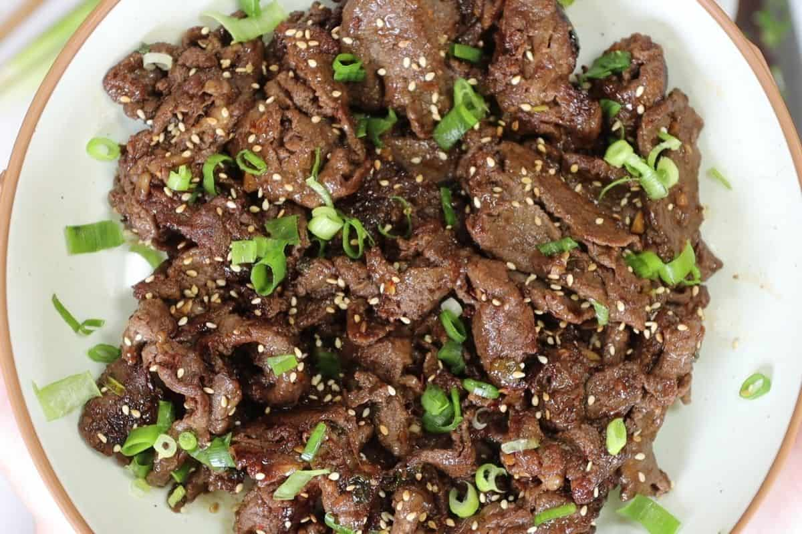

Odin Recipes
Hello! Welcome to my collection of my personal favorite recipes that I make on a regular basis! I have
all types of recipes ranging from quick and easy all the way to knock your socks off impress your
significant other kind of meals! So there's no doubt in my mind that there will be something for
everyone to like here! I hope you enjoy!
My Favorites
These are some of my top recipes! My go to meals for many different reasons!

-
Korean BBQ Beef | This my all time favorite meal for
how quick and easy it to make as well as the effortless clean up process! Who doesn't like a quick
clean up!

-
Taco Smash Burger | This is another quick and
easy meal that tastes so good I make it at least once a week! If you don't have a lot of
time and still want a great tasting meal than look no further! Taco Smash Burgers are here!

-
The Perfect Steak | This one is a special one for me becuase
I've been cooking steaks for as long as I can remember its been quite the journey. Everyone has
their special way for preparing or cooking a steak but it really comes down to heat and flavor baby!
if you want to learn a few things I've picked up over the years than check this out!